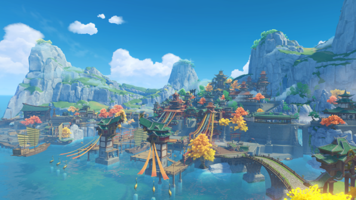
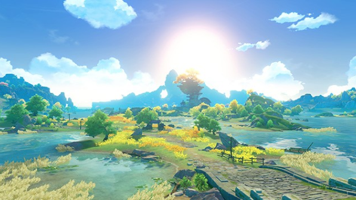
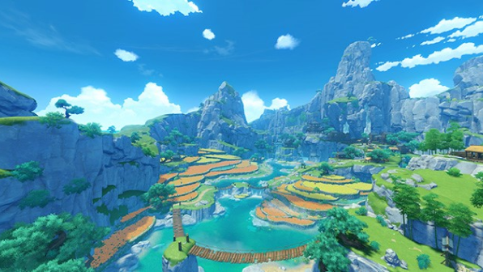

Liyue

Liyue Harbor

Dihua Marsh

Qingce Village
Jueyun Karst

Liyue Harbor
The establishment of the harbor kicked off Liyue's seafaring trade. As Teyvat's largest market harbor, the sheer amount of goods that flow to and from it is simply incomparable for other ports.Every year during the Lantern Rite you can see thousands of lanterns ascend into the night sky — a Liyue event that you can't afford to miss.
Liyue Harbor